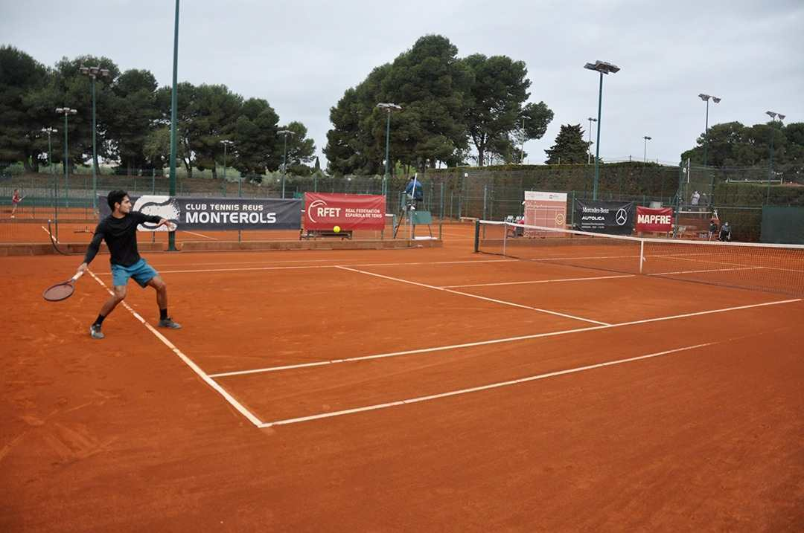
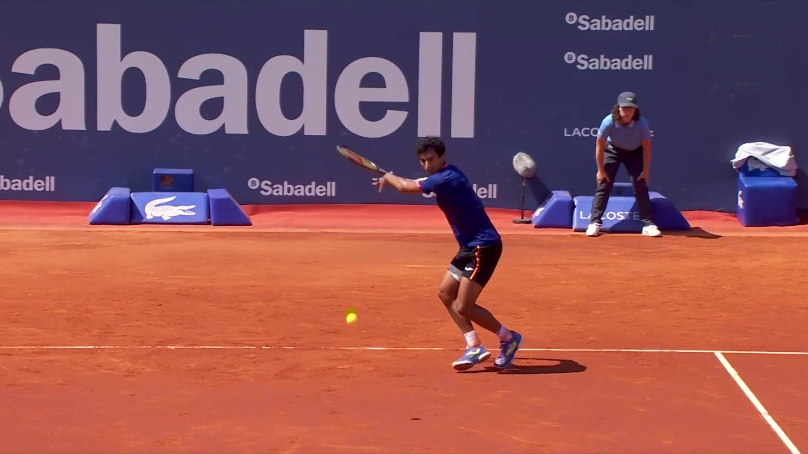

-

-

- 
- 
ATP World touraren web-gune ofiziala, partiduen emaitzekin, eguneroko notiziekin, rankingekin, jokalarien eta txapelketen informazioarekin, notiziekin eta bideo guztiekin. Web-gune hau bereziki espainiako tenis munduan oinarrituta dago, espainiako bertako tenis federazioak administratuta.
24 - 30
OCT
ATP CHALLENGER
TENERIFE
15-17
OCT
ITF WORLD TENNIS TOUR
WOMEN
Les Franqueses del Valles
20-25
OCT
TENNIS EUROPE JUNIOR
TOUR
Palmanova-2 (sub'14) | C2
1-4
NOV
ITF WORLD TENNIS TOUR
SENIORS
A Coruña | MT100
Berriak
|
|
 |
 |
|---|---|---|
| Bouzas, Llinares, Parrés, Llamas y Winter | Nico Álvarez Varona lortzen du ATP zirkuitua lortzea Gijonen | Madrid-en W80 ITF txapelketa jokatuko da. |